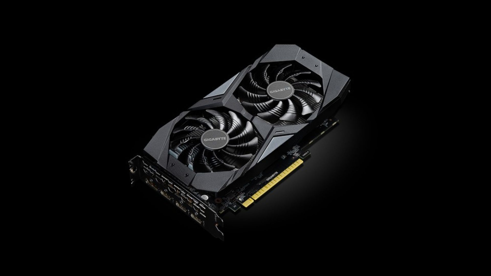

Conheça as principais características das placas de vídeo, desde suas especificações técnicas até sua composição, tamanho, custo e forma de comercialização.
| Especificação | Descrição |
|---|---|
| GPU | Processador responsável pelos cálculos gráficos. |
| VRAM | Memória dedicada para armazenar texturas e dados gráficos. |
| Clock | Velocidade de funcionamento da GPU (MHz ou GHz). |
| Barramento (Bus) | Define a largura da comunicação entre a GPU e a memória. |
| TDP | Quantidade máxima de energia consumida pela placa. |
| Arquitetura | Tecnologia utilizada na construção da GPU. |
| Ray Tracing | Tecnologia que simula iluminação e reflexos realistas. |
| DLSS / FSR | Tecnologias que aumentam o desempenho usando inteligência artificial. |
| Saídas de vídeo | HDMI, DisplayPort e, em alguns modelos, DVI. |
As placas de vídeo são produzidas em diferentes cores para atender aos mais variados estilos de computadores.
As cores mais comuns são preto, branco, prata e cinza, mas alguns modelos possuem iluminação RGB personalizável,
permitindo alterar as cores por meio de softwares específicos.
Além da estética, a cor não interfere no desempenho da placa de vídeo, sendo apenas uma característica visual.
Modelos especiais podem possuir acabamentos metálicos ou pinturas exclusivas para edições limitadas.
O tamanho das placas de vídeo varia conforme sua categoria e potência.
Modelos de entrada costumam medir entre 17 e 20 centímetros e utilizam apenas uma ventoinha.
As placas intermediárias possuem aproximadamente 22 a 28 centímetros, normalmente com duas ventoinhas.
Já os modelos de alto desempenho podem ultrapassar 35 centímetros de comprimento,
utilizando duas ou três ventoinhas e ocupando até três slots do gabinete.
Por esse motivo, é importante verificar se o gabinete possui espaço suficiente antes da compra.
O preço das placas de vídeo depende do desempenho, da quantidade de memória VRAM,
da tecnologia utilizada e da marca fabricante.
principalmente aqueles destinados a inteligência artificial, produção profissional e jogos em alta resolução. Os preços também podem variar de acordo com a disponibilidade no mercado e a cotação do dólar.
As placas de vídeo são comercializadas em caixas de papelão reforçadas,
desenvolvidas para proteger o produto durante o transporte.
No interior da embalagem normalmente estão presentes a placa de vídeo protegida por um saco antiestático,
espumas de proteção contra impactos, manual do usuário, guia de instalação,
certificado de garantia e, em alguns modelos, adaptadores de alimentação.
Na parte externa da caixa são exibidas informações importantes,
como o modelo da placa, quantidade de memória VRAM,
tipo de memória, sistema de refrigeração, recursos compatíveis
(como Ray Tracing e DLSS) e as principais especificações técnicas.